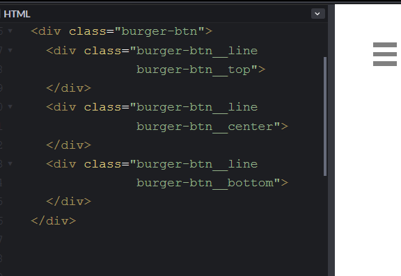

Блок — это самостоятельная часть страницы.
При сборке все файлы одного типа будут слиты в один общий файл.
'./src/css/**/*.css' что означает '
внутри проекта из всех поддиректорий src/css все файлы с расширением css'
а запись 'style.css' - '
один файл).
Как правило заказчик указывает на отображение или поведение блока на сайте, а не в папке проекта. Как в таком случае быстро найти нужные файлы в директории src?
Названия папок в src нужны разработчику. Если названия классов и директорий/папок и файлов связаны с названием классов, то поиск нужных файлов не составит труда.
Отбражать в названии блока внешние контейнеры не нужно. При необходимости все контейнеры блока можно легко отследить по DOM элементу на сайте.
Лучше всего представлять блок как директорию, где будет находится все, связанное с отображением и поведением повторяющейся части дизайна. Реальная возможность размещать все файлы (html, css, js) зависит от инструментов сборки.
Элемент элемента. Запись вида block__elem1__elem2 в методологии BEM недопустима. Если подобное состояние кажется возможным, значит мы имеем дело не с одним блоком. Разделение общего, связанного состояния на более независимые и отдельные - постоянный процесс в разработке. У этого процесса есть устоявшееся название - рефакторинг
Если 🌹 роза это блок, то запах розы это элемент блока.
Элемент не отделим от блока. В синтаксисе BEM элемент обозначают суффиксом с двумя подчеркиваниями block__element. Но возможны особые договоренности внутри вашего прокта.
BEM как и большинство успешных решений в разработке использует принцип DRY. На практике это означает что в одном html теге может быть несколько названий элементов
Блоки могут потребовать изменить свой вид или поведение. Например при смене фона. Для таких случаев используют модификатор. Это дополнительный класс с синтаксисом block__elem__modifier
Модификатор — дополнительный класс для смены оформления или поведения. Поэтому в названии необходимо отобразить:
Для модификатора принцип DRY состоит в том, что модификатор всегда добавляется к имеющемуся имени элемента. Это означает, что тегу добавляют такой же класс с модификатором, а не заменяют название. Например:
<div class="block block--red"
<div class="block__elem block__elem--red"
Такая запись позволяет не перезаписывать все css правила для нового блока, а только описывать изменяемые свойства.
ТЗ : во все .card main вставить
- burger-btn
- размером 1rem и
- белого цвета
- в верхний левый угол
- c отступом .5rem от сторон